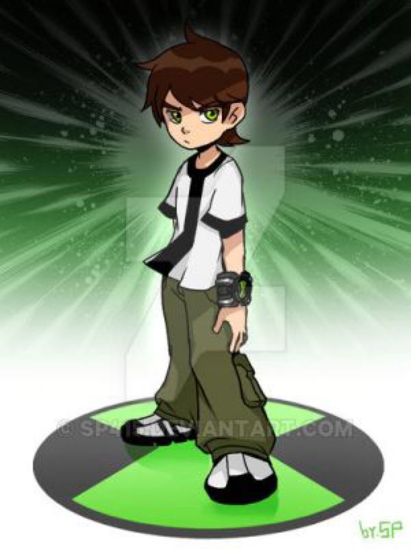
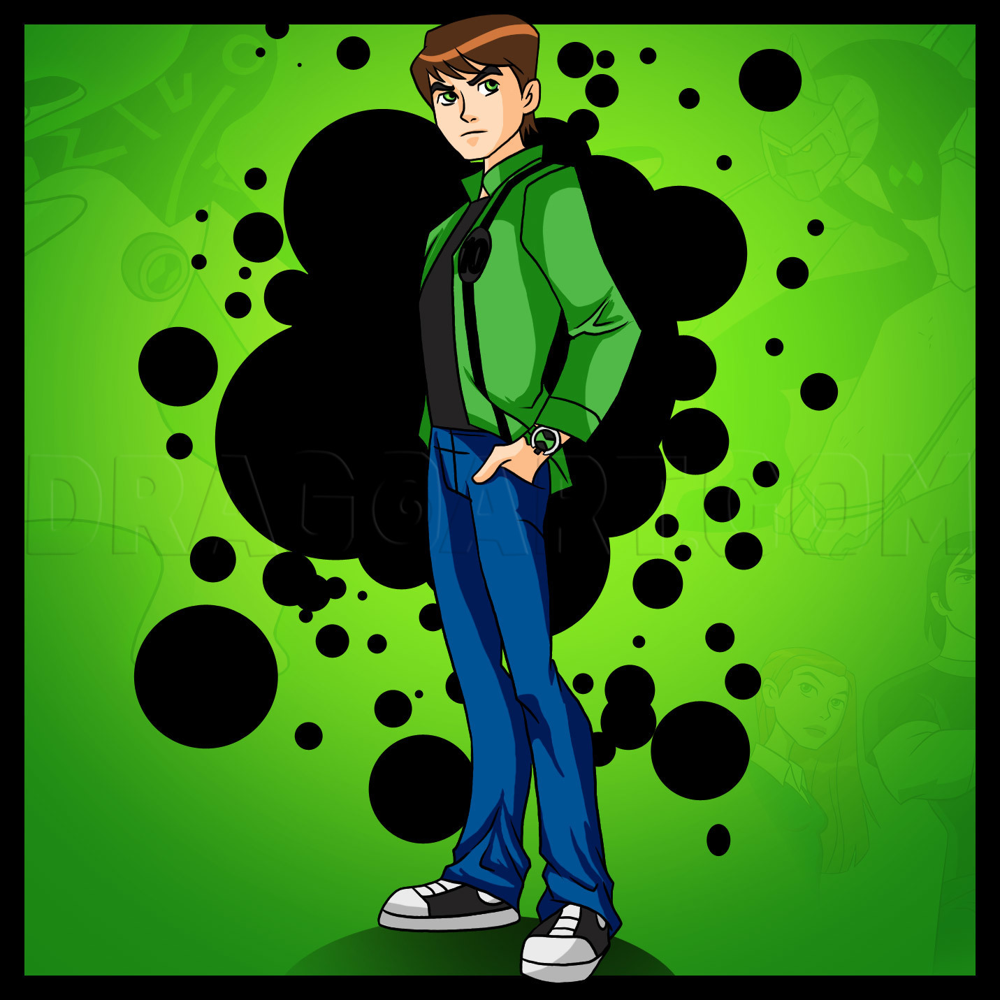
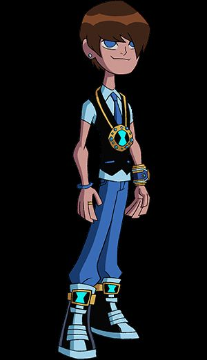
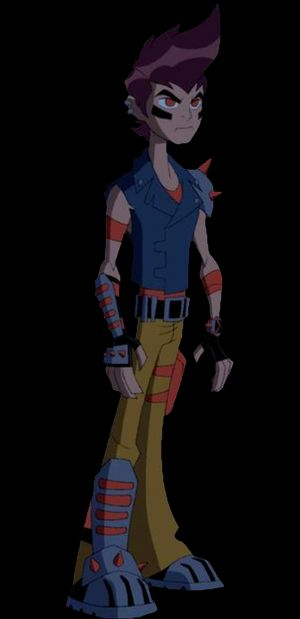
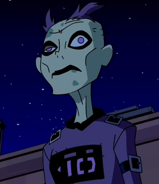
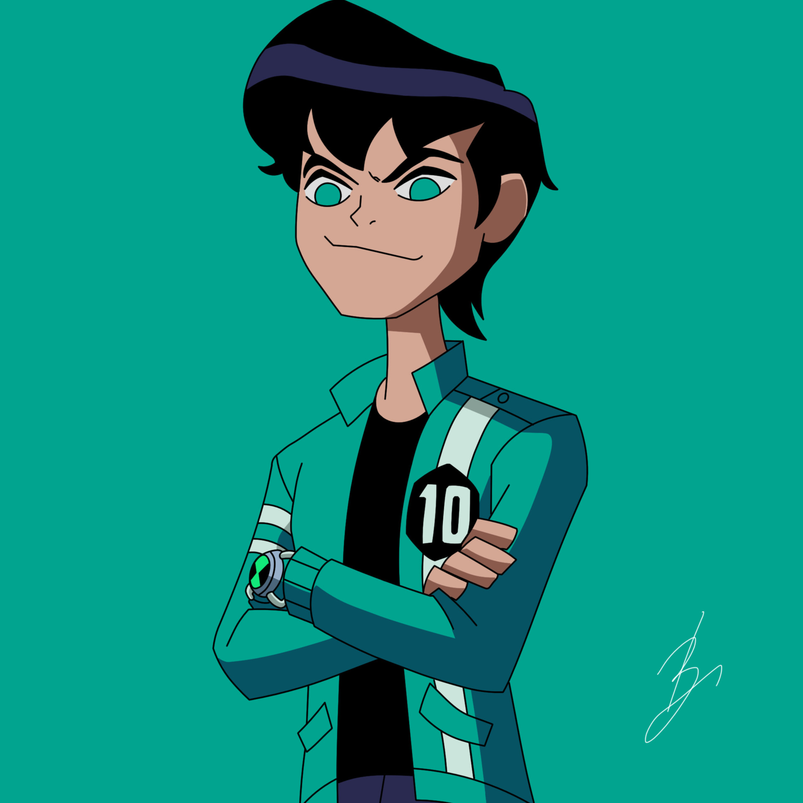

Ben clasico (2006)
Ben adolecente de alien force y ultimate alien (2008)
Ben 23, es de la dimension 23 y el solo tiene 23 aliens
Mad Ben, es de una dimencion post apocaliptica
Benzarro, es de la dimension del miedo
bad ben, es de un universo donde ben no se hace heroe si no villano